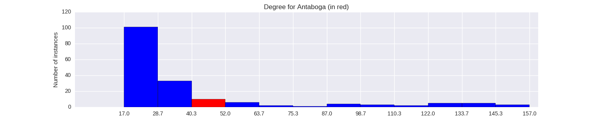

Quantiative Wayang Dictionary
Antaboga
Terms of address: Batara
Type: God
Origin: Java
Notes on the Sanskrit version: Not found in the Indian Mahabharata.
Alternative names: Anantaboga
Description in the Javanese version: Sometimes known as Anantaboga. Ananta means "unending" and boga means "food". He was turned into a God by King Tribuwana and he inhabits the Saptapratala heaven . He owns the Aji Kamayan, which grants him the power to become a human being at will. When angry, the movement of his tail can cause a commotion in the worlds of the mortals and the heavens. He often helps the Pandawa. He is shaped like a snake.
Found in the follwing lakon (stories):
Family relationships
Father: Anantawara
Consorts: Supreti
Offspring: Nagagini, Nagatatmala, Sri
More information
Aji / Wahyu / Pusaka: Aji Kamayan
Sources: Ensiklopedi Wayang Purwa, pp. 31-33; Mengenal Gambar Tokoh Wayang Purwa, p. 17; Sejarah Wayang Purwa, p. 70
Network measurements for Antaboga
| Measurement | Value | |
|---|---|---|
| Degree | 46.0 |  |
| Weighted Degree | 91.0 |  |
| Closeness Centrality | 0.576158940397 |  |
| Betweeness Centrality | 10.2345133882 |  |
| Eigenvector Centrality | 0.468382955184 |  |
{kind=link}
Characters in the same adegan as Antaboga
| Character | Link weight |
|---|---|
| Character | Link weight |